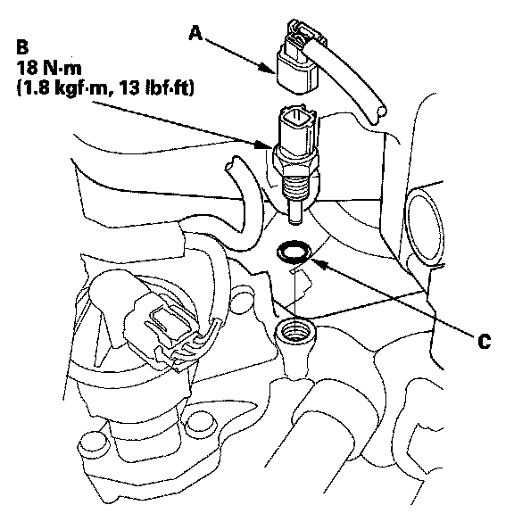

ECT Sensor 1
ECT Sensor 1 Replacement1. Drain the engine coolant.
2. Remove the engine cover.
3. Remove the main under-hood fuse/relay box.

4. Disconnect the ECT sensor 1 2P connector (A).
5. Remove ECT sensor 1 (B).
6. Install the parts in the reverse order of removal with a new O-ring (C), then refill the radiator with engine coolant.